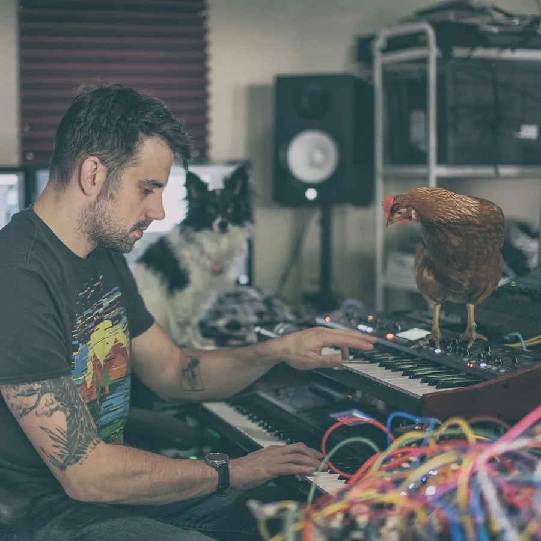
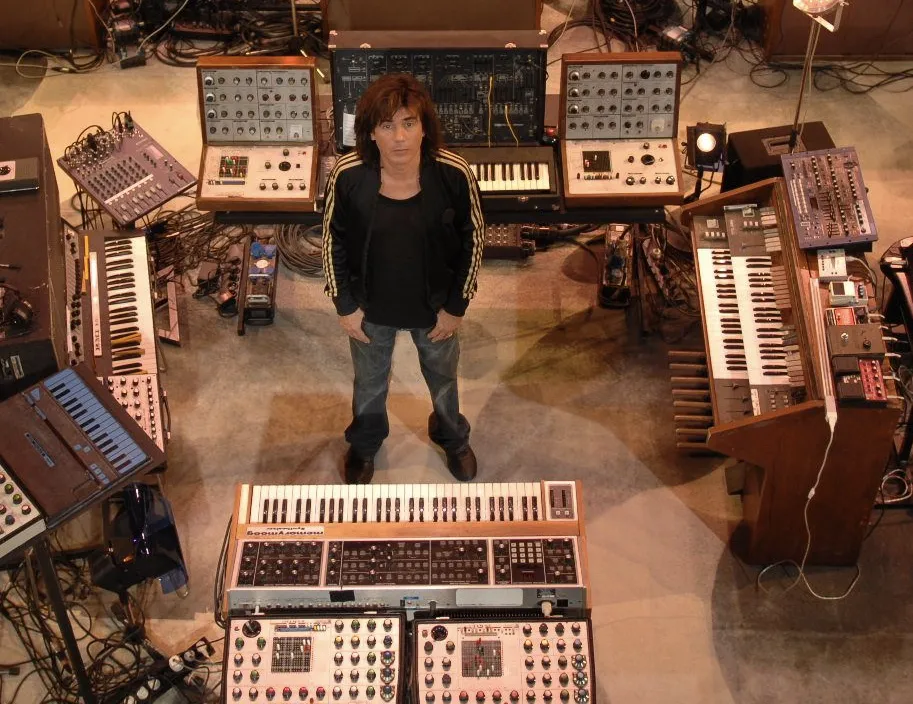
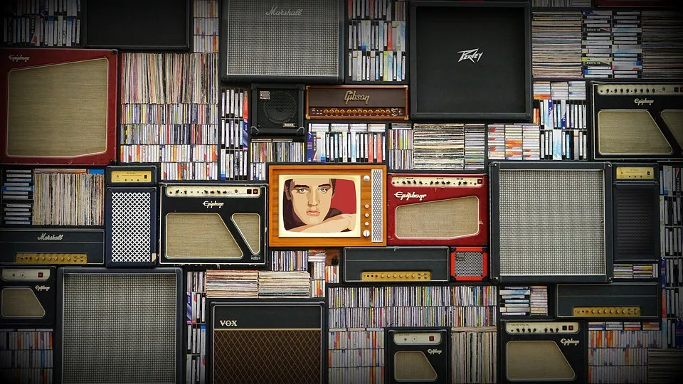
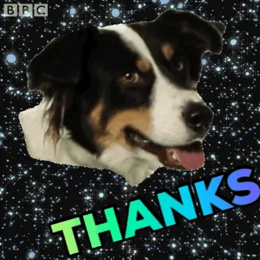

La musique est un art. Elle nous touche, nous transporte, nous fascine, mais sans jamais se répéter. Les compositeurs créent depuis des siècles nombre d’oeuvres uniques et formidables : nous pouvons goûter à la Danse Macabre de Camille Saint-Saëns et enchaîner aussitôt sur un Iron de Woodkid pour finir sur un Time de Pink Floyd. Et la technologie nous permet de vivre et revivre ces instants que la musique nous procure, encore et encore.
En contre-courant le plus total, la musique générative offre un aspect nouveau à ce que nous connaissons. Nous n’avons plus un morceau écoutable à l’infini, mais une infinité de morceaux écoutables une fois. Nous redécouvrons alors que la musique peut être éphémère et imprévisible, celle-ci nous offrant un unique billet vers un monde mystérieux.
La consommation musicale en 2019
Avant toute chose, il est nécessaire de faire un point sur l’état de la musique, et notamment sa consommation, à l’heure où ces lignes sont écrites.
D’après l’étude Music Listening de 2019 de l’IFPI (International Federation of the Phonographic Industry), basée sur les 16 à 64 ans en étudiant 18 pays :
- nous écoutons de la musique environ 18 heures par semaine (soit 2.5 heures par jour) (17.8h en 2018).
- 89% de la consommation musicale provient des services de streaming (86% en 2018).
- nous écoutons de la musique dans la voiture, pour se relaxer à la maison ou encore en faisant le ménage et la cuisine.
Nous sommes donc des consommateurs de musique notoires, et ce via des services de streaming. Cependant, l’étude ne détaille pas les manières que les personnes ont de consommer la musique : est-ce que nous aimons les nouveautés ? Combien de fois nous écoutons un même morceau ? Est-ce que nous écoutons tous la même chose ?
Pour étayer mon propos, il est nécessaire de jeter un coup d’oeil à l’étude Extreme re-listening: Songs people love … and continue to love de Frederick Conrad, Jason Corey, Samantha Goldstein, Joseph Ostrow et Michael Sadowsky. À défaut de pouvoir obtenir le papier (merci au système de publications des papiers scientifiques), cet article du Michigan News détaille les points suivants :
- 86% des participants écoute leurs musiques préférées quotidiennement ou plusieurs fois par semaine.
- 43% des personnes réécoutant leurs musiques préférées quotidiennement le font au moins 3 fois par jour.
- 60% écoutent leurs musiques préférées plusieurs fois d’affilée.
On peut aisément dire, à partir de ces statistiques, que les gens aiment particulièrement écouter les musiques auxquels ils se sentent proches. Nous semblons donc consommer régulièrement les mêmes morceaux.
En combinant ces deux études, on peut affirmer en partie que les gens aiment écouter des morceaux qu’ils connaissent, et ces morceaux sont des versions définies et figés dans le temps. A contrario du concert, une musique que nous écoutons ne changera pas : The Sound of Silence de Simon & Garfunkel reste toujours le même, la seule différence étant la qualité d’écoute que nous avons aujourd’hui par rapport à sa sortie initiale.
Il n’y a qu’une performance enregistrée une fois et répétée par la machine indéfiniment. Peut-être qu’à un moment il y aura une version remasterisée, mais elle ne change pas le matériel de base : elle ne fait que le faire sonner mieux par rapport aux règles de production de l’époque.
Générer is the new composer
Petit historique personnel
Durant mon cursus universitaire, j’ai eu l’occasion de rencontrer Pierre-Henri Vulliard, travaillant au SCRIME sur la génération musicale. Je me souviens d’un travail titanesque qu’il avait réalisé pour construire des morceaux en se basant sur des boîtes à rythme (dans un langage de programmation spécialisé dont j’ai oublié le nom), et c’était assez incroyable de voir ça. On découvre une machine qui compose en mélangeant des règles musicales et des nombres aléatoires, en ajoutant des variations basées sur le swing et tant d’autres critères.
 Benn Jordan aka. The Flashbulb Plusieurs années plus tard, Benn Jordan (The Flashbulb), compositeur de musiques électroniques, avait fait un point sur l’état de la musique générative à travers une série de vidéo Youtube (Partie 1 - Partie 2 - Partie 3). Le résultat était assez impressionnant, mais il s’agissait plus de génération de musique contrôlé et alors très redondant.
 Jean-Michel Jarre et ses synthétiseurs analogiques Puis, en 2018, j’ai un ami qui m’a envoyé un article sur l’application EōN de JarreLab (= Jean-Michel Jarre). L’application coûte 10€, ce qui m’a rebuté au début, jusqu’à que je me laisse tenter. Et j’ai bien fait de me laisser tenter : je n’ai jamais connu une telle qualité de musique générative. C’est à tel point que je me demande toujours si on ne se moque pas de moi et que ce cher Jean-Michel a décidé de composer suffisamment de morceau pour que je ne puisse pas me souvenir des précédents.
(Note : si vous êtes intéressés, c’est essentiellement de l’ambient / musique électronique et d’autres choses aussi, et c’est disponible ici uniquement sur iOS.)
Bref, on n’est pas là pour envoyer des fleurs à Jean-Michel.
65daysofstatic Pour continuer mes propos, l’année 2021 a été le moment où un petit groupe de post-rock instrumental britannique, 65daysofstatic, a décidé de créer un générateur de musiques nommé Wreckage Systems qui crée et diffuse de la musique sur plusieurs flux d’écoute (leur propre site et Youtube). Cette musique est créée selon différents schémas qu’ils ont développés et qu’ils continuent d’étoffer en se basant sur leurs travaux pour la musique pseudo-générative du jeu No Man’s Sky (qui est détaillée dans une excellente conférence à l’EGX). Les différentes musiques générées sont mensuellement exportées et retravaillées pour former des albums en version “fixe”.
Découverte de l’instant
La chose que EōN et Wreckage Systems m’ont fait réaliser est que la musique générative est éphémère. On peut la rapprocher, d’une certaine manière, à la musique créée en concert qui correspond à une version unique de plusieurs morceaux (tant que ceux-ci ne sont pas enregistrés). On peut garder des instants, on se souvient qu’il y a eu ce solo, cette mélodie, ce mix, mais on ne peut pas revivre le même moment.
La musique générative recrée ce sentiment et ramène l’écoute à ses origines les plus primaires : la découverte. Chaque morceau est une construction unique, et, pour peu que l’algorithme de génération aient des résultats suffisamment variable, il ne sera jamais possible de prévoir l’évolution des morceaux. Nous nous retrouvons dans un musée sans fin, perdu à déambuler dans les couloirs du son, sans aucun moyen de revenir sur nos pas.
On vit alors une expérience surnaturelle, où l’on écoute de la musique, jusqu’au moment où on entend une sonorité que l’on aime, qu’on aimerait réentendre, mais que nous savons perdue à jamais dans les méandres de l’électronique. Ô toi arpège au timbre si sompteux, ta perte fût un moment bien trop douloureux !
Générer l’existant : la composition
Sous ce titre qui ne veut presque rien dire, il est intéressant de mener la réflexion de ce que peut composer la musique générative. Nous avons traité d’un cas où la machine peut maintenant nous offrir de la musique de Jean-Michel Jarre et de 65daysofstatic jusqu’à ce que mort s’en suive. Mais serait-il possible d’appliquer ce procédé à une plus grande variété de musique ?
Les évolutions sur l’intelligence artificielle durant les années 2010 sont une excellente réponse à cette question. Pour illustrer le propos, penchons nous sur le Doodle (les logos spéciaux de Google) du 21 Mars 2019 pour célébrer ce cher Johann Sebastian Bach (disponible ici). Ce Doodle propose à l’utilisateur de placer quelques notes sur une portée et génère une oeuvre étrangement ressemblante à ce qu’aurait pu proposer le compositeur allemand.
Tout l’aspect de composition proposé par ce Doodle est assurée derrière par un modèle de machine learning baptisé Coconet. Sans rentrer dans les détails, il s’agit d’une intelligence artificielle qui a analysé des partitions de Bach. Ensuite, on lui a donné un instrument d’un morceau de Bach, et l’intelligence devait retrouver ce qu’aurait composé Bach. À force de répéter cette opération sur un ensemble de morceaux suffisants (306 morceaux de chorales dans le cas présent), l’intelligence a alors été capable de réécrire des morceaux à la façon supposée de Bach. Coconet a fait l’objet d’un article de recherche intitulé Counterpoint by Convolution par Cheng-Zhi Anna huang, Tim Cooijmans, Adam Roberts, Aaron Courville et Douglas Eck.
Sans être hautain ou irrespectueux, si nous arrivons à avoir une intelligence artificielle capable de composer du Bach, je pense qu’il est possible de composer des musiques populaires modernes basées sur des structures musicales et des sonorités bien précises (par exemple, les fameux 4 accords magiques : Mi Maj - Si Maj - Do# Maj - La Maj). La machine a donc le pouvoir de composer.
Générer l’existant : le son
La seconde étape consiste alors à obtenir un son à faire palir l’Orchestre philharmonique de Berlin. Et vu qu’on parle de Berlin, on pourrait parler des travaux réalisées par Orchestral Tools pour enregistrer et fournir une interface pour les sons de l’intégralité de l’orchestre. Et le tout est disponible dans l’instrument virtuel Berlin Orchestra Inspire 1. On peut aussi parler de l’instrument virtuel pour les cuivres à faire palir les orchestres les plus imposants, mais on va en rester là.
Encore mieux, j’ai eu l’occasion de travailler avec le nouveau VST Arkhis basé sur les outils de Orchestral Tools, et le résultat est simple : avec 3 accords, vous faites toutes les musiques d’ambiance des films, voire certains thèmes. Et il est certain qu’aujourd’hui, un bon nombre de compositeurs travaillent directement avec ce genre d’outils. Pour un exemple des capacités d’Arkhis, cette vidéo permet de voir un peu la force qu’à ce plug-in.
Le charme d’un son passe aussi par un mixage de qualité pour rendre le son parfaitement audible. Et, même dans ce cas, il est possible d’y mettre de l’intelligence artificielle pour produire des sons de qualités. C’est notamment ce que propose LANDR proposant des masterings automatique soi-disant basée sur l’analyse de plus de 10 millions de masters. Et optionnellement, ils font la distribution.
On pourrait être tatillon en prétendant qu’il est compliqué à un ordinateur de produire une voix, mais quand je vois les progrès de l’instrument Vocaloid ainsi que les avancements dans la recherche sur le clonage de voix (démos disponibles ici), je pense qu’on va vite arriver à des choses incroyables.
Avec un peu d’argent, il est donc possible de construire un pipeline de création musicale complètement électronique, capable de créer de la musique orchestrale (et bien plus encore), le tout de façon automatique.

Les impacts possibles de la musique générative
Une fin du droit d’auteur ?
En France et jusqu’à présent, si un artiste crée une oeuvre, il est assuré d’un droit de propriété incorporelle exclusif et opposable à tous (L111-1 du Code de la propriété intellectuelle). Néanmoins, que se passe-t-il lorsque la machine va créer une oeuvre ?
La législation française actuelle n’a aucune réponse sur ce point, mais plusieurs hyphothèses ont été abordées dans le cadre de la Mission Intelligence Artificielle et Culture réalisée par Alexandre Bensamoun et Joëlle Farchy par demande du Conseil supérieur de la propriété littéraire et artistique. Mais, comme nous allons le voir, chacune des solutions possèdent son lot de défauts qu’il est nécessaire de prendre en compte.
1. Le droit d’auteur au concepteur·trice de l’IA
L’idée la plus simple est que la personne qui a conçu l’intelligence créant la musique possède un droit d’auteur sur les créations. D’une certaine manière, le développeur·euse est responsable de ce que est l’IA (elle ou il l’a développé et a choisi son évolution par les jeux de données que l’IA utilise), et est donc responsable de ce que l’IA est censé produire.
La problématique principale levée sur cette argument est qu’il est impossible de prouver qu’une oeuvre a été générée par l’IA. Comment est-ce que je sais que le Doodle sur Bach a composé l’oeuvre que j’écoute, alors que je pourrais très bien être l’auteur de ce morceau ?
Et, en allant un peu plus loin, comment faire appliquer ce droit d’auteur à une plate-forme comme Youtube ? Les robots de Youtube chargés de faire respecter le droit d’auteur (Content ID) n’ont aucun moyen de savoir si la personne qui a créé l’outil qui a créé l’oeuvre a donné son autorisation à la personne, car ils n’ont pas moyen de connaître l’outil derrière chaque morceau.
Dans la pratique, cette version du droit d’auteur n’est qu’applicable après analyse d’un humain, et encore, vu la progression récente des IAs dans le domaine des langues, les créations deviendront de moins en moins reconnaissables, et ce droit de plus en plus inapplicable.
2. Le droit d’auteur à l’utilisateur de l’IA
Une autre idée simple est que la personne qui utilise l’IA obtient le droit d’auteur de ce que l’IA va créer sur son matériel informatique. Il devient l’auteur de l’oeuvre créée par la machine.
Ici, le problème est que le droit d’auteur a été initialement créé pour permettre de protéger l’effort créatif, et que cet effort n’existe pas quand un utilisateur appuie sur un simple bouton pour créer une musique complète. On aurait alors une pléthore d’oeuvres sans effort créatif, et la signification initiale de l’oeuvre en serait que appauvrie.
3. La création d’un nouveau droit
Cette idée couvre 3 notions différentes dont la finalité reste équivalente :
- la création d’un droit d’auteur spécifique à la création générée à la manière du droit du logiciel,
- la création d’un droit d’auteur à la manière d’un “droit voisin” (le droit d’auteur concernant les tiers indirects d’une musique comme les artises-interprètes),
- la création d’un droit sui generis à la manière du droit accordé aux producteurs de bases de données.
Sans rentrer dans les détails par faute de compréhension pointue, on considère ici que nous faisons face à un cas qui n’est pas couvert par le droit, et qu’une nouvelle catégorie de legislation spécifique à la création générée par intelligence artificielle est nécessaire.
Est-ce qu’une nouvelle législation permettrait de corriger les problèmes levés dans le cadre des différents problèmes déjà énoncés ? Je n’ai malheureusement pas la connaissance nécessaire pour en juger.
4. L’absence de droit privatif
On arrive à l’idée la plus simple : aucun droit d’auteur n’est défini pour les oeuvres générées par une intelligence artificielle. La raison principale est que la création la plus importante est la création de l’intelligence artificielle, qui est déjà rémunérée et soumis au droit du logiciel. Les créations ne sont qu’un résultat mécanique de la machine, et aucun processus créatif n’est pris en compte dans ce cas.
Outre le fait qu’on assisterait à une massification pure et dure de la quantité musicale (potentiellement au détriment de la qualité), plusieurs détournements seraient possibles. Par exemple, pourquoi un artiste dirait que sa création proviendrait d’une intelligence artificielle alors qu’il serait couvert par le droit d’auteur (et potentiellement le droit voisin) dans le cas où il énonce qu’il est le créateur de la musique ? De même, qu’en est-il des musiques écrites par un humain qui seraient revendiquées comme musique d’une intelligence artificielle ?
Les différentes propositions énoncées ici correspondent toutes à des choix relativement pertinents. Qu’il s’agisse d’une refonte de la loi jusqu’à l’abstention de toute modification, le choix sera essentiellement un choix politique, faisant état d’une position assumée vis-à-vis des créations artistiques des intelligences artificielles. La réflexion est déjà commencée, mais il est important de la poursuivre très sérieusement afin de déterminer non seulement notre position sur les oeuvres générées mais aussi notre vision de l’art génératif d’une manière générale.
Une nouvelle écoute de la musique
Outre l’aspect juridique, la musique générative pourrait avoir un impact artistique assez conséquent. Nous parlions précedemment de cette faculté qu’à la musique générative de proposer sans cesse de nouveaux morceaux, sans jamais sombrer dans la répétition. Nous avions aussi remarqué que, en général, nous préférions écouter des musiques que nous connaissons sur le bout des doigts. Qu’en serait-il si nous créerions des musiques avec la capacité de se modifier ?
Nous pourrions distinguer plusieurs types de modifications :
- la modification sonore ciblée : il s’agit simplement de modifier la façon qu’est synthétisé un son, comme lorsque l’on modifie l’enveloppe ou l’oscillateur d’un synthétiseur, ou que l’on ajoute un peu de distorsion sur une guitare.
- la modification sonore généralisée : on applique ici un effet léger un ensemble d’instruments, ou même à l’intégralité du morceau. Par exemple, l’ajout ou la modification d’un compresseur ou d’un égaliseur afin d’apporter un mixage différent au morceau.
- la variation temporelle : on modifie le rythme de la musique, en passant, par exemple, d’une version à 120bpm à une version à 115bpm. On pourrait même imaginer des musiques de genres comme la chillwave ou la downtempo avec des alternatives plus lourdes avec un tempo plus lent.
- la variation instrumentale : cette fois-ci, on change carrément l’instrument utilisé sur un morceau par un autre. Une partition jouée au glockenspiel pourrait être rejouée sur un xylophone ou un vibraphone.
- la variation mélodique : une mélodie serait modifiée en partie. Il est assez aisé d’imaginer une ou deux notes d’une mélodie qui serait jouées un ton plus haut, ou dont l’ordre serait modifiée.
- la transposition : on modifie la tonalité complète du morceau, en passant d’un morceau joué à partir d’un Mi Majeur en Mi Mineur ou en Fa Majeur. On pourrait alors imaginer des variantes plus bluesy d’un morceau rock.
- la variation structurelle : la structure de la musique est changée. On va modifier l’ordre d’entrée des instruments sur une progression, ou encore l’utilisation de ponts avant un refrain, et même le nombre de mesures dans un couplet.
- la différence rythmique : un rythme n’est pas forcément joué. Un compositeur pourrait prévoir des possibilités sur sa musique, et seulement certaines d’entre elles sont jouées.
- etc.
Par l’utilisation de ces modifications, l’écoute d’une musique serait renouvelée en permanence. Nous assisterions, d’une certaine manière, à un concert artificiel dont les possibilités seraient plus ou moins prévisibles, en alliant les capacités créatives de l’humain avec le pseudo-aléatoire de la machine.
Cet impact nécessiterait directement la refonte des systèmes audio existants (qu’ils soient software ou hardware) pour être capable de lire des morceaux variables, là où tous nos systèmes actuels ne font que lire bêtement des versions uniques d’un morceau.
L’apogée des webradios génératives
Sur les plate-formes comme Twitch et Youtube, on peut retrouver des webradios diffusant (très souvent illégalement) des morceaux d’un ou plusieurs genres spécifiques, et ce en permanence.
Ce nouveau médium, descendant direct des radios de diffusion musicale, permet à des personnes d’écouter en permanence de la musique, et ce sans interruption aucune (a contrario des radios classiques). Il s’agit d’un moyen idéal pour être complètement concentré ou tout simplement pour découvrir de nouvelles musiques.
D’une certaine manière, ces webradios pourraient être des fournisseurs de musiques génératives, offrant un moyen d’accès simple à de la musique adaptée pour la concentration et la relaxation de prime abord. On pourrait ensuite imaginer des radios diffusant des styles musicaux plus marqués, comme de la funk ou du metal, permettant une écoute sans cesse renouvelée.
Une aide à la composition
L’amélioration des techniques de générations sonores pourrait aussi devenir synonyme d’aide aux compositeurs. La machine pourrait aussi bien nous fournir une mélodie ou un rythme basé sur une idée en particulier (par exemple, un thème triste proposerait une mélodie en mineur avec un tempo lent) ou même construire un début d’orchestration en reconnaissant une mélodie chanté par un compositeur.
L’idée ici n’est pas de remplacer les compositeurs·trices tels qu’iels, mais de les assister afin de donner le meilleur d’eux-mêmes et même d’obtenir des nouvelles façons de concevoir et de penser la musique. On retrouve notamment cette démarche avec les joueurs·euses de Go qui s’améliorent grandement à l’aide d’AlphaGo.
La musique générative est un concept incroyable qui, malgré son apparence, n’est pas contradictoire avec la musique “traditionnelle”. Elle permet de vivre des instants de bohneur au gré des bits, donnant la possibilité de créer des sons uniques et d’offrir un vecteur de changement à la musique traditionnelle.
D’une certaine manière, j’ose penser que la musique générative est une évolution similaire à la musique numérique lorsqu’on était à la musique analogique, qu’il s’agisse d’une évolution des moyens de production ou des moyens de consommation. Il faut repenser toutes les techniques et les moyens de diffusion tels qu’ils existent aujourd’hui, pour ouvrir un nouvel univers que certains·nes précurseurs·euses expérimentent dés aujourd’hui.
Je fais pas muzik Je suis muzik
Chris Prolls
 Merci de votre lecture :)